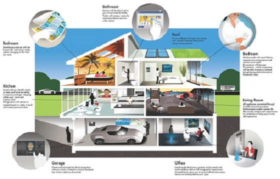
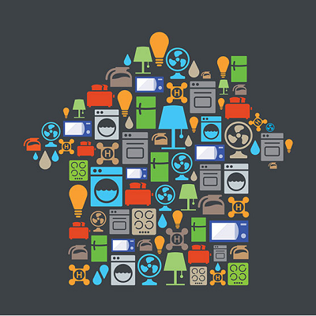
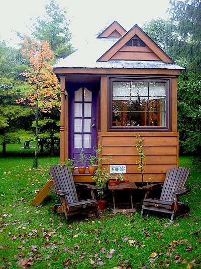
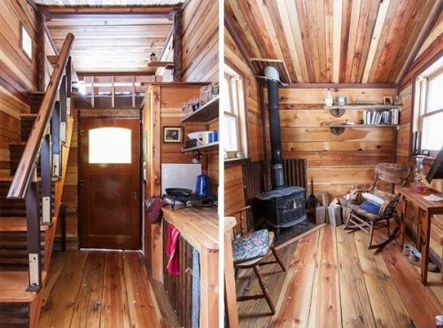
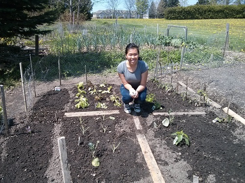

This project will be looking at the advantages and disadvantages of both lifestyles. Each way of living is drastically different from the other- almost parallels. In the 21st century technology is growing like never before, it can now be integrated into the home to serve as convenience for the average busy homeowner. On the opposite side of the spectrum we have people who are trying to escape this form of living and are choosing to live much simpler, hence the tiny home movement.
The trend of smart homes is a fast growing market where technology is integrated into the homes with prospects of making life simpler. The smart home web however is widely fragmented, everything from smart light bulbs to web-connected thermostats which are all controlled by their own apps. I think a great example of how technology aims to do this is Google’s Nest which tries to connect it all. It aims to create an interactive, thoughtful products which with connect all the home gadgets in order to keep the home owner them comfortable and safe. How does it work, the technology learns your life or specifically your routine and will automatically change the settings of your home appliances to save energy and provide you with convenience.

A smart home was originally developed with the primary goal of providing convenience, improving security, and saving energy. This type of technology is not only targeted towards young tech savvy individuals but also those with reduced capabilities. Over the past decade the trend of smart homes are becoming more targeted towards supporting the abilities of older adults and people with disabilities to remain living independently in their own homes. This will also reduce the hardship on family members and care givers (Ding, 2011).

A smart home refers to a unit of residence which is set up with sensors to observe the environment and devices/actuators to provide a proactive service which will potentially improve the occupants' experience (Ding, 2011). An important aspect of the smart home is its ability to monitor the activities of daily living and safety of the residents. Smart homes are equipped with a large amount of networked sensors, radio frequency chips, and embedded processors. This type of equipment is widely available and is relatively inexpensive. With the Nest technology all this can be controlled by a single device instead of many individual instruments.
Networks of sensory equipment are in the home to recognize and monitor basic and unique activity of an individuals' daily life. These activities include: leaving and entering the home, when laundry is done, when lights are turned off and on, and can be as detailed as when a person baths, gets dressed, and needs to take their medication (Ding, 2011). This amount of detail has the potential to allow smart homes to capture and understand the physical and cognitive health conditions as well as recognize the patterns of the dwellers. Deviation or atypical behavior can be an indicator of problems (Ding, 2011). Growing research has been looking into the predictive capabilities of a smart home. The smart home will be able to predict the inhabitants' future activities and set the features of the home accordingly. However this is difficult because the data is limited only to the physical environment and the detection of human activity in the home. Human behavior cannot be predicted accurately on those alone and cannot monitor the essential elements which affect human behavior such as emotions, sensibility, and psychological response (Kim, 2013).
We now like our houses the same way we like our food, big and cheap. It is even argued that we – 21st century individuals want to own a big home in order to build our stature and dignity which now rest on the property we own (Tiny, 2013). Living in the city has always been the “new American Dream” which is the reason why affordable housing has been a popular topic in the media. This being said, it is not easily done because of the limited amount of space available to build large new housing development. More people are moving into cities and are becoming more crowded which means the demand for housing is rising (Huffington, 2014). The World Health Organization estimates that by 2030 6 out of 10 people will be living in a city globally.

Prices for a tiny house will vary by region. Based on the documentary Tiny, Christopher the home owner spent $36,000 total on his mobile tiny home. This however did not include the cost of the property he acquired to build on. Overall this is a fraction of what an average home would cost. These homes rarely are larger than 500 square feet and this minimal square footage means there is reduced maintenance costs and reduced energy consumption (The New York Times, 2007). Not only are we talking about the cost of building the home but those who live in tiny homes also understand the struggles of consumerism. They start to question, why do we have so much stuff?. In fact you consume less this way because of the limited space (Tiny, 2013). The image below shows how tiny home owners cope with the limited space.

The main reason that individuals choose to live in small homes is because of the rising price in the housing market and to my shock only partially because of environmental concerns. In the document Tiny, many interviews were shown consisting of small home owners telling us why they choose to live in their tiny home. Many responded with wanting to build a sense of place. For example a young woman who had a successful career in finance lived in many different condominiums throughout her young adult life and felt no connection to her “home”. She was unhappy with her life and felt she had nowhere to turn to for comfort. Her and her significant other decided to build a small home. They and most other small home owners found that being involved in the building process was one of the greatest rewards from the entire experience. People in tiny homes are less stressed, not in debt, more happy, know how to prioritize, and are not moved by consumerism (Tiny, 2013). Another reason people build small homes is because the house can be built based on individual values. Everything that goes into the home is based on the individual’s preferences and beliefs. You essentially are putting yourself into the home; it is a representation of you.
Living in a tiny home will come with its challenges. The first and hardest for most people was dealing with clutter. People will learn to let go of most of their physical possessions, and escape the consumer desire of buying for wants instead of needs. People do learn from these challenges and they find what they are capable of and they discover what they want in life. Some find this is especially true with career goals because you are no longer tied down with financial burdens.
After conducting my research on the subject, I confidently say that I can see the trend of smart homes becoming main stream in Waterloo by 2025 or sooner. I would love to see the small house movement as a growing alternative in Kitchener/Waterloo but I do not think there is the available space and appropriate conditions for it to be viable- i.e. the long cold winters would make it difficult. I understand and accept the direction that technology is heading but I am not one to need all of it in my life. My role as a citizen will be very simple, I would continue as I am, commuting to and from work on my bike when I can, volunteer at the community garden, and trying not to fall into the hands of consumerism. I would support and participate in local workshops that teach practical skills – wood working, bike maintenance, pottery, sewing, etc. This would support my views as a citizen who wants to live as simply as possible. I have always wanted to build my own yard furniture and shed in order to appreciate the work that goes into it and I have always loved created and making things.

Image of my garden in May after planting the sprouts
This project allowed me to learn about two cases from very different ends of a spectrum. I see the benefits and challenges of both styles of living. With regards to smart homes, I see the great benefits it can provide for those with reduced capabilities. It also allows for great convenience in a persons' busy life but I question if it is necessary? Will it make a person become dependent on technology in their life and will it make people lazier now that machines will do more for them?. I was fascinated with the tiny house movement but it was very difficult to find any academic work on the movement. This movement provides hopes for those who want to escape living in a consumer world but is it an ideal long term investment? I think it is a great way to live but I have immediate concerns with the life style such as starting a family. In the documentary not one person they interviewed was living in a tiny home with children. They were all single or couples living in a tiny home. This has definitely opened my eyes to alternatives from living in a conventional home; there are many ideas out there to make your home your sense of place and a reflection of who you are.